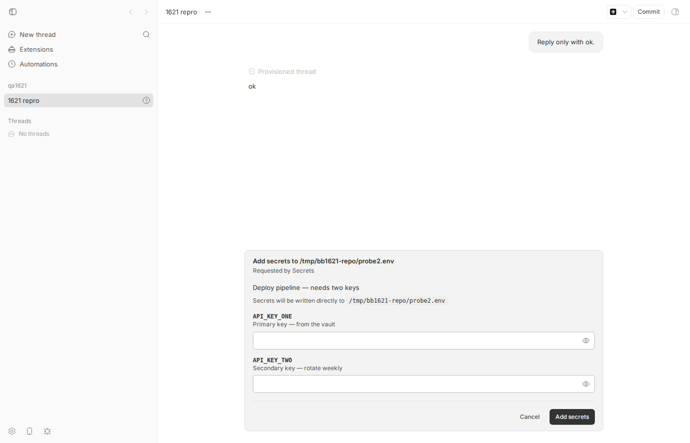
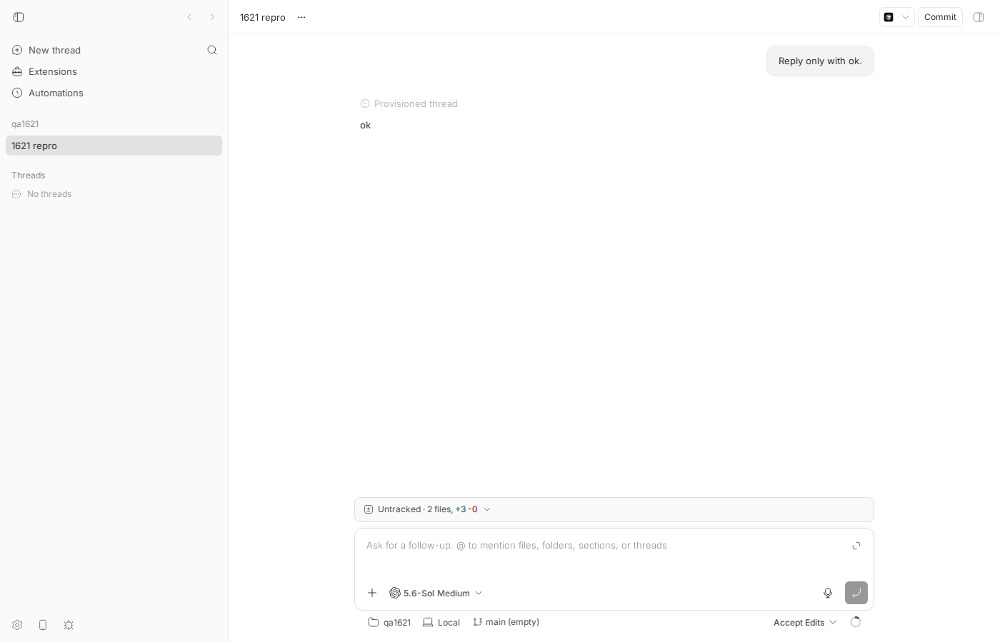
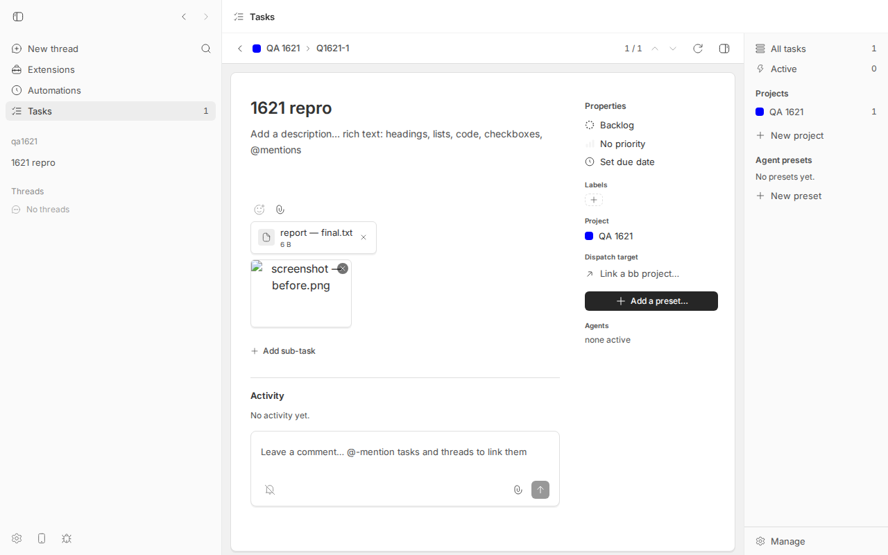
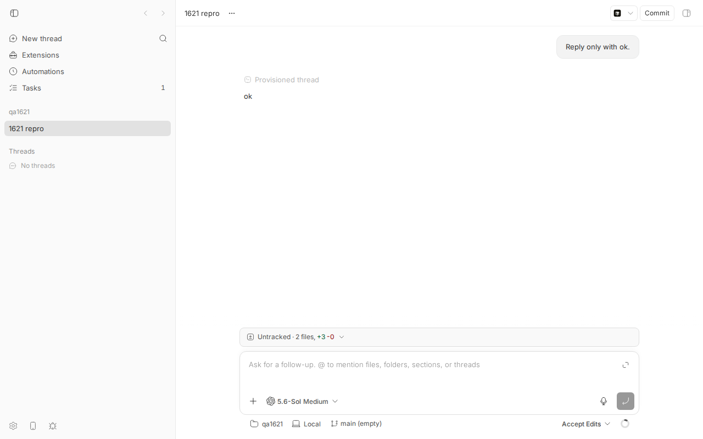

#1621 · Non-Latin-1 chars (em dash) in interaction/secret-request text crash server response serialization; client sees only 'fetch failed'
1. TL;DR
The reporter saw bb secret request … --purpose "…—…" hang for minutes and end with fetch failed, found 12 TypeError: Cannot convert argument to a ByteString … 8212 entries in the server log at about the same time, and concluded that the em dash in the secret-request text was being put into an HTTP response header.
Two separate things are going on. (a) The secrets path never puts free text into headers: a full bb secret request with em dashes in --purpose, both --describe texts and even a secret value completes with exit 0 through the real UI (§4.1, §4.2). What makes it "hang for minutes, then fetch failed" is that the CLI's plugin dispatch is one bare fetch() to POST /api/v1/plugins/secrets/cli that stays open while the human fills the form; Node's undici default headersTimeout is 300 s, so any secret request answered later than 5 minutes dies client-side with fetch failed, the server sees the abort and marks the interaction interrupted/request-aborted, and the form disappears (§4.4, §4.5). The reporter's ASCII control test only held for 2.5 minutes, so it could not discriminate.
(b) The logged TypeError is a real bug in bb, but in the bundled tasks plugin, not in secrets: its attachment download route writes the raw attachment file name into Content-Disposition: …; filename="…", and sanitizeFileName keeps non-Latin-1 characters. Viewing a task whose attachment (an image renders via <img src=download-url>) is named e.g. screenshot — before.png makes that request 500 and logs exactly the reporter's line, 4 times per request on 0.37.0 (5 on main) because Hono re-throws the deferred header error at every middleware level at or outside compress (§4.3, §4.6). Three em-dash-named attachments × 4 lines = the reporter's 12 lines. Nothing links (a) and (b) except timing.
2. Claims vs findings
| Claim (from issue) | Status | Evidence |
|---|---|---|
| Text fields routed through the plugin-CLI / interaction response path (secret request purpose/descriptions) are placed raw into HTTP response headers, so an em dash crashes header construction. | Refuted for the secrets/interaction path; Verified for a different bundled route | The plugin CLI route returns context.json(result) and interactions travel as JSON (§5.1). Live run with em dashes in --purpose, --describe, and the secret value: exit 0, file written, status:200, zero "Unhandled server error" from that request (§4.1, §4.2). But the bundled tasks plugin's GET /api/v1/plugins/tasks/http/attachments/download does put a free-text field (the attachment file name) into a header (plugins/tasks/attachments/index.ts:538-546, unchanged since desktop-v0.36.0). Live: em-dash file name → HTTP 500 and 5 ByteString log lines (§4.3). The first pass of this report wrongly claimed no bb route did this; the verifier found the site. |
Server log shows 12 Cannot convert argument to a ByteString … 8212 errors, stack new Headers ← get headers ← set res ← dispatch. | Verified (mechanism and a bundled source) | Reproduced live from the tasks attachment route with the identical message and stack (§4.3, server-log-tasks-bytestring-lines.jsonl) and in isolation (§4.6). The reporter's indexes 35/43/46 = len('attachment; filename="') (22) or len('inline; filename="') (18) plus the position of the dash inside the file name; the reporter did not include the header value so which files is inferred, not proven. |
| Each of the three failing header values was "retried 4x". | Refuted (alternative explanation verified) | One request produces multiple identical log lines: the lightweight Response defers header validation, and Hono re-throws from set res at every middleware level at or outside compress, each calling onError → errorToResponse → logger.error. Rule (unit-tested in §4.6): lines = (levels at or outside compress) + 1; inner levels such as the /api/v1/* slow-request logger add none. 0.37.0 has telemetry + cors + compress ⇒ 4 lines for any path including /api/v1/plugins/tasks/http/…; main adds an event-loop level ⇒ 5 (matches §4.3 live). Nothing in the CLI plugin proxy retries (apps/cli/src/plugin-cli-proxy.ts:388-410). The first pass of this report inferred "4 lines ⇒ path outside /api/v1"; that inference was wrong and is withdrawn. |
bb secret request hangs ~4 min then fails with fetch failed. | Verified (different cause) | Pure-ASCII request left unanswered: CLI prints fetch failed, exit 1 after ~301 s (§4.4). Standalone Node script confirms undici HeadersTimeoutError / UND_ERR_HEADERS_TIMEOUT at 301 s (§4.5). Server marks the interaction interrupted/request-aborted. |
| Control test with pure ASCII and a ~2.5-minute hold completed cleanly, so ASCII vs em dash is the discriminating variable. | Refuted | 2.5 min < 300 s. Em-dash runs answered at 13 s, 32 s and 184 s all succeeded; the ASCII run held > 300 s failed. Hold duration, not character set, discriminates. |
| Client sees "no credential produced, no actionable error". | Verified | CLI output is literally fetch failed; the pending interaction disappears from the UI (status interrupted, reason request-aborted). |
Even if a header crash happened, the client would only see a dead connection retried into fetch failed. | Refuted | Hono's top-level #handleError still answers with errorToResponse: HTTP 500 {"code":"internal_error","message":"Internal server error"} (§4.3 live, §4.6). Through the plugin CLI the user would see Unexpected response from the plugin CLI endpoint (HTTP 500), not fetch failed; in the tasks UI the image simply renders broken (§4.3 screenshot). |
3. Environment
| bb commit | 16ceb3a540f81c1189efaffb27a39b1d9443abf5 (main, 2026-08-18); reporter ran the packaged app on 2026-08-14 (≈ desktop-v0.37.0 fe432e3b1; plugins/tasks/attachments/index.ts:542, routes/plugins.ts, hono 4.11.9 / @hono/node-server 1.19.14 identical in both) |
| OS / Node | Linux 7.0.0-29-generic, Node v24.18.0 (undici 7.28.0) |
| Provider | codex (codex-cli 0.147.0), one tiny turn "Reply only with ok." to obtain a live thread |
| Dev instance (this pass) | worktree wf_debcf606-e4a-11, App http://localhost:14666, Server http://localhost:22666, Host daemon 127.0.0.1:30666, data dir ~/.bb-dev/projects-bb-.claude-worktrees-wf_debcf606-e4a-11-fca9b252d14a, machine bee = host_r4dw5bsc42, project proj_n34ptw2nup (local path /tmp/bb1621-repo), thread thr_m5apn4t6y5 (codex, one "Reply only with ok." turn), tasks plugin builtin:tasks. hono 4.11.9, @hono/node-server 1.19.14, undici 7.28.0 (Node 24.18.0). |
| Earlier passes | Second pass ran on a sibling worktree (server :22837, thread thr_m5apn4t6y5); its results matched this pass in every particular. The two §4.2 screenshots and secret2-cancel.log/secret4-em-dash-describe-ui.log were produced on this same instance/thread in the first pass and are kept as-is. |
4. Minimal reproduction
All scripts and logs are in 1621/repro/. Every script takes its ports/ids from environment variables; nothing is hard-coded to this machine.
4.0 Step 0 — one-time setup (dev instance, project, live thread)
# in your bb worktree at 16ceb3a54
pnpm install --frozen-lockfile --prefer-offline && pnpm exec turbo run build
scripts/bb-dev-app current # prints App/Server/Host daemon URLs and the data dir
eval "$(scripts/bb-dev-app env)" # exports BB_SERVER_URL, BB_HOST_DAEMON_PORT
export BB_REPO=$PWD BB_DATA_DIR=<data dir printed above>
pnpm bb:dev machine list # -> name "bee", id host_r4dw5bsc42 (yours will differ)
export BB_MACHINE=bee
mkdir -p /tmp/bb1621-repo && git -C /tmp/bb1621-repo init -q
curl -s -X POST $BB_SERVER_URL/api/v1/projects -H 'content-type: application/json' \
-d '{"name":"qa1621","source":{"type":"local_path","path":"/tmp/bb1621-repo","hostId":"host_r4dw5bsc42"}}' # -> "id":"proj_n34ptw2nup"
# --machine is REQUIRED here; without it: "Failed to create thread: HTTP 404: Host not found"
node $BB_REPO/packages/scripts/dist/commands/run-cli.js thread spawn --project proj_n34ptw2nup --machine host_r4dw5bsc42 \
--provider codex --permission-mode accept-edits --title "1621 repro" --prompt "Reply only with ok." --json # -> "id":"thr_m5apn4t6y5"
export BB_THREAD_ID=thr_m5apn4t6y5 # wait ~20 s until `curl -s $BB_SERVER_URL/api/v1/threads` shows it idle
4.1 Em dash in --purpose — works (refutes the trigger)
Terminal 1 (blocks until the form is answered):
bash 1621/repro/bb1621-run-secret.sh "Testing the transport — an em dash is here" /tmp/bb1621-secret1.log
Terminal 2 — answer the form the way the UI does (bb1621-answer.sh finds the pending interaction and POSTs …/interactions/<id>/respond with {"value":{"values":{"FS_TEST_PROBE":"hunter2"}}}):
$ bash 1621/repro/bb1621-answer.sh respond
interaction pint_ufnm2vmc6h status=pending purpose="Testing the transport — an em dash is here"
{"id":"pint_ufnm2vmc6h","threadId":"thr_m5apn4t6y5","status":"resolved","statusReason":null,"createdAt":1787034428818,"expiresAt":1787035028818,"resolvedAt":1787034438190,…,"payload":{"kind":"plugin","title":"Add secrets to /tmp/bb1621-repo/probe.env","data":{"purpose":"Testing the transport — an em dash is here",…}},"resolution":{"kind":"plugin_submitted"}}
Expected (per issue): server TypeError, CLI fetch failed. Actual (secret1-em-dash-purpose.log, re-run in this pass):
$ cat /tmp/bb1621-secret1.log
{"path":"/tmp/bb1621-repo/probe.env","names":["FS_TEST_PROBE"],"added":1,"updated":0,"unchanged":0}
exit=0 elapsed=10s
$ cat /tmp/bb1621-repo/probe.env
FS_TEST_PROBE='hunter2'
$ grep -c "Unhandled server error" $BB_DATA_DIR/logs/server*.log # only the 5 tasks-route lines from §4.3, none from this request
5
$ grep -h '"path":"/api/v1/plugins/secrets/cli"' $BB_DATA_DIR/logs/server*.log | tail -1
{"level":20,"time":1787034438202,"component":"server","durationMs":9400.4,"method":"POST","path":"/api/v1/plugins/secrets/cli","status":200,"msg":"Slow API request"}
4.2 Em dashes in --purpose, both --describe texts, and a secret value, submitted through the real UI — works
bash 1621/repro/bb1621-run-secret-describe.sh /tmp/bb1621-secret4.log # then open $APP_URL/projects/<proj>/threads/$BB_THREAD_ID, fill the two fields, click "Add secrets" # (first pass drove this with dev-browser: 1621/repro/bb1621-submit.js)


first-value — with dash / second-value and clicking "Add secrets": the form is resolved and the status bar shows the new untracked file.CLI output (secret4-em-dash-describe-ui.log) and resulting file:
{"path":"/tmp/bb1621-repo/probe2.env","names":["API_KEY_ONE","API_KEY_TWO"],"added":2,"updated":0,"unchanged":0}
exit=0 elapsed=184s
$ cat /tmp/bb1621-repo/probe2.env
API_KEY_ONE='first-value — with dash'
API_KEY_TWO='second-value'
Cancel path with em dash purpose (bb1621-answer.sh cancel, secret2-cancel.log): Secret request cancelled (user). exit 1 — also fine.
4.3 The reporter's log line, produced by a bundled bb plugin: tasks attachment with an em dash in its name (real bug on main)
Script: bb1621-tasks-attachment.sh — installs builtin:tasks, creates a tracker project + task, uploads a file named report — final.txt via bb tasks attachment add … --name, then downloads it once via the CLI (server-side read, works) and once via the HTTP route the app uses (fails).
$ bash 1621/repro/bb1621-tasks-attachment.sh # needs BB_SERVER_URL BB_HOST_DAEMON_PORT BB_REPO BB_MACHINE [BB_DATA_DIR]
task key: Q1621-1
--- upload as "report — final.txt"
{"attachment":{"id":"01M09RT05GFNH0M7PVKGE1Q5PM","taskId":"01M09RSZBJ2KY1XGA99MYYBSW2","commentId":null,"fileName":"report — final.txt","mime":"application/octet-stream","sizeBytes":6,"blobPath":"blobs/01M09RT05GFNH0M7PVKGE1Q5PM/report — final.txt","isImage":false,"createdAt":"2026-08-18T06:26:42.992Z"},"url":"/api/v1/plugins/tasks/http/attachments/download?attachmentId=01M09RT05GFNH0M7PVKGE1Q5PM"}
attachment id: 01M09RT05GFNH0M7PVKGE1Q5PM
--- download via CLI (bb tasks attachment get)
Saved report — final.txt /tmp/bb1621-downloaded.txt
exit=0
--- download via raw HTTP
HTTP 500 content-type=application/json
{"code":"internal_error","message":"Internal server error"}
Expected: HTTP 200 with Content-Disposition: attachment; filename="report - final.txt"; filename*=UTF-8''report%20%E2%80%94%20final.txt. Actual: HTTP 500 and five identical entries in $BB_DATA_DIR/logs/server.1.log (server-log-tasks-bytestring-lines.jsonl; index 29 = len('attachment; filename="report ')):
time=1787034403739 msg="Unhandled server error" err.message="Cannot convert argument to a ByteString because the character at index 29 has a value of 8212 which is greater than 255." #1 stack: webidl.converters.ByteString ← record<ByteString,ByteString> ← HeadersInit ← new Headers ← get headers ← compress2 ← dispatch ← cors2 #2 stack: … ← new Headers ← get headers ← set res ← dispatch ← cors2 #3 stack: … ← new Headers ← get headers ← set res ← dispatch ← <anonymous> (event-loop middleware) #4 stack: … ← new Headers ← get headers ← set res ← dispatch ← dispatch (telemetry middleware) #5 stack: … ← new Headers ← get headers ← set res ← dispatch ← app.fetch
Same thing through the UI: upload an image with an em dash in its name and open the task — the tasks detail view renders attachments with <img src="/api/v1/plugins/tasks/http/attachments/download?…"> (views/detail/attachments.tsx:9), so every render is one failing request and another batch of log lines (5 more appeared at 1787034812151 when the screenshot below was taken; total 10 lines in the log after two failing GETs).
node $BB_REPO/packages/scripts/dist/commands/run-cli.js tasks attachment add Q1621-1 --file /tmp/bb1621-shot.png --name "screenshot — before.png" --machine $BB_MACHINE --json # open $APP_URL/plugins/tasks/tasks and click the task (Playwright script: 1621/repro/bb1621-tasks-screenshot.mjs) $ APP_URL=http://localhost:14666 node 1621/repro/bb1621-tasks-screenshot.mjs http://localhost:14666/plugins/tasks/tasks/task/Q1621-1 500 http://localhost:14666/api/v1/plugins/tasks/http/attachments/download?attachmentId=01M09RW1DCHHKWTPHVKAY11EDZ # the <img> request

report — final.txt is listed (its link will 500 when clicked) and the image screenshot — before.png is a broken image showing only its alt text — the <img> GET returned the 500 from the header crash.Unit test that fails on main (issue-1621-non-latin1-filename.test.ts, in the worktree at plugins/tasks/attachments/issue-1621-non-latin1-filename.test.ts; run cd plugins/tasks && pnpm exec vitest run attachments/issue-1621-non-latin1-filename.test.ts). Under the fake plugin host the global Response validates headers eagerly, so the route throws in the handler and the harness returns 500 — the assertion expect(outcome).toEqual({status: 200, disposition: …}) fails with {"status":500,"disposition":null}. Log: vitest-tasks-em-dash-filename.log.
import { createFakePluginHost } from "@get-bb/plugin-sdk/testing";
import { describe, expect, it } from "vitest";
import { createTasksStore } from "../db";
import { registerAttachments } from ".";
const EM_DASH_NAME = "report — final.txt";
describe("issue #1621: non-Latin-1 attachment file name", () => {
it("download route survives an em dash in the file name", async () => {
const { bb, harness } = createFakePluginHost({ pluginId: "tasks" });
const store = createTasksStore(bb.storage.database());
const project = store.createProject({ name: "A", prefix: "A", color: "blue" });
const task = store.createTask({ projectId: project.id, title: "owner" });
registerAttachments(bb, store);
try {
const query = new URLSearchParams({ taskId: task.id, fileName: EM_DASH_NAME, mime: "text/plain" });
const uploaded = await harness.fetchHttp("POST", `/attachments/upload?${query}`, {
body: new TextEncoder().encode("hello"), headers: { "content-type": "text/plain" },
});
expect(uploaded.status).toBe(201);
const { attachmentId } = (await uploaded.json()) as { attachmentId: string };
// sanitizeFileName keeps the em dash, so the raw name reaches Content-Disposition.
expect(store.getAttachment(attachmentId)?.fileName).toBe(EM_DASH_NAME);
let outcome: { status: number; disposition: string | null } | { thrown: string };
try {
const res = await harness.fetchHttp("GET", `/attachments/download?attachmentId=${attachmentId}`);
outcome = { status: res.status, disposition: res.headers.get("content-disposition") };
} catch (error) {
outcome = { thrown: error instanceof Error ? error.message : String(error) };
}
console.log("issue-1621 download outcome:", JSON.stringify(outcome));
// Desired behaviour (RFC 6266): ASCII fallback in filename=, UTF-8 in filename*.
expect(outcome).toEqual({
status: 200,
disposition: `attachment; filename="report - final.txt"; filename*=UTF-8''report%20%E2%80%94%20final.txt`,
});
} finally { await harness.dispose(); }
});
});
issue-1621 download outcome: {"status":500,"disposition":null}
× bb-plugin-tasks attachments/issue-1621-non-latin1-filename.test.ts > … > download route survives an em dash in the file name 32ms
→ expected { status: 500, disposition: null } to deeply equal { status: 200, …(1) }
Test Files 1 failed (1) Tests 1 failed (1)
4.4 The actual client symptom: pure ASCII, unanswered for > 300 s → fetch failed
$ bash 1621/repro/bb1621-run-secret.sh "ASCII only, long hold test" /tmp/bb1621-secret3-longhold.log
# do NOT answer the form; wait.
$ cat /tmp/bb1621-secret3-longhold.log
fetch failed
exit=1 elapsed=301s
$ curl -s $BB_SERVER_URL/api/v1/threads/$BB_THREAD_ID/interactions # -> [] (only pending interactions are listed)
$ sqlite3 $BB_DATA_DIR/bb.db "select id,status,status_reason,(expires_at-created_at) from pending_interactions where thread_id='thr_m5apn4t6y5' order by created_at"
pint_7s8f6awrrx|resolved||599999 # first pass, §4.2
pint_yrxqnrk4h9|interrupted|user|600000 # first pass, cancel test
pint_xzhm6fk5au|interrupted|request-aborted|599999 # first pass, long hold
pint_5wh38ev9pm|resolved||600000
pint_ufnm2vmc6h|resolved||600000 # §4.1 this pass (em dash)
pint_tm4hxeswb6|interrupted|request-aborted|600000 # §4.4 this pass (ASCII, unanswered)
# server log for the same request:
{"level":20,"time":1787034760633,"component":"server","durationMs":300734.8,"method":"POST","path":"/api/v1/plugins/secrets/cli","status":200,"msg":"Slow API request"}
Expected: the CLI waits for the human (the interaction's own expiry is 10 min: expiresAt − createdAt = 600000). Actual: at ~300 s the client gives up with the bare message fetch failed, exit 1; the server sees the socket close, aborts ctx.signal, and the pending interaction is interrupted (status: interrupted, statusReason: request-aborted), so the form vanishes from the UI with no explanation. No credential is written. Nothing is logged at error level on the server — the request "completed" with status 200 from the server's perspective; nobody was listening (secret3-longhold-ascii.log).

fetch failed (1621/repro/bb1621-thread-screenshot.mjs). The secret-request form that was pending is gone (interaction pint_tm4hxeswb6 is interrupted/request-aborted); a human who was about to fill it in sees nothing and gets no explanation. Compare with the first screenshot in §4.2, where the form is present while the request is still open.4.5 Why 300 s: Node's default undici headersTimeout
$ node 1621/repro/bb1621-headers-timeout.mjs # fetch() against a local http server that never answers
{"elapsedS":301,"message":"fetch failed","causeName":"HeadersTimeoutError","causeCode":"UND_ERR_HEADERS_TIMEOUT","causeMessage":"Headers Timeout Error"}
fetch failed is undici's generic wrapper; the real cause (UND_ERR_HEADERS_TIMEOUT) is on err.cause, which the CLI never prints (headers-timeout.log).
4.6 The mechanism and the log-line count rule, isolated (unit test, passes on main = mechanism confirmed)
Test file: issue-1621-non-latin1-header.test.ts (in the worktree at apps/server/test/issue-1621-non-latin1-header.test.ts). Run: cd apps/server && pnpm exec vitest run test/issue-1621-non-latin1-header.test.ts. It boots @hono/node-server with the same outer middleware shape as server.ts (N pass-through levels → cors → compress → onError=errorToResponse → optional inner levels) and a route that returns new Response(json, {headers: {"x-purpose": "Testing the transport — an em dash is here"}}). It asserts: the exact TypeError message and the get headers ← set res stack; the client gets the JSON 500; and the count rule lines = (levels at or outside compress) + 1, with inner levels adding nothing.
function buildApp(outerExtra: number, inner: number): Hono {
const app = new Hono();
for (let i = 0; i < outerExtra; i++) app.use("*", passthrough);
app.use("*", cors({ origin: () => null }));
app.use("*", compress());
app.onError((error) => errorToResponse(error, logger));
for (let i = 0; i < inner; i++) app.use("/bad-header", passthrough); // like the /api/v1/* slow-request logger
app.get("/bad-header", () => new Response(JSON.stringify({ ok: true }), {
headers: { "content-type": "application/json", "x-purpose": EM_DASH_TEXT },
}));
return app;
}
…
it.each([
[0, 0, 3, "cors+compress (baseline)"],
[0, 2, 3, "cors+compress + 2 inner levels: inner levels add no lines"],
[1, 1, 4, "desktop-v0.37.0: telemetry+cors+compress (+ inner slow logger) = 4 = reporter's count"],
[2, 1, 5, "main 16ceb3a54: telemetry+event-loop+cors+compress (+ inner slow logger) = 5 = live tasks route"],
])("outerExtra=%i inner=%i logs %i lines (%s)", async (outerExtra, inner, expectedLines) => { … expect(byteStringErrors().length).toBe(expectedLines); });
Output (vitest-mechanism.log), trimmed:
{ "status": 500, "contentType": "application/json",
"body": "{\"code\":\"internal_error\",\"message\":\"Internal server error\"}",
"loggedCount": 3,
"messages": [ "Cannot convert argument to a ByteString because the character at index 22 has a value of 8212 which is greater than 255.", … ×3 ] }
✓ control: a normal JSON route works
✓ a header dictionary with U+2014 crashes at set res and yields an unstructured 500
✓ outerExtra=0 inner=0 logs 3 lines (cors+compress (this test's baseline))
✓ outerExtra=0 inner=2 logs 3 lines (cors+compress + 2 inner levels: inner levels add no lines)
✓ outerExtra=1 inner=1 logs 4 lines (desktop-v0.37.0: telemetry+cors+compress (+ inner slow logger) = 4 = reporter's count)
✓ outerExtra=2 inner=1 logs 5 lines (main 16ceb3a54: telemetry+event-loop+cors+compress (+ inner slow logger) = 5 = live tasks route)
Test Files 1 passed (1) Tests 6 passed (6)
5. Root cause
5.1 The plugin CLI dispatch is one long-lived, timeout-bound fetch() (the user-visible fetch failed)
apps/cli/src/plugin-cli-proxy.ts:388-410 sends POST /api/v1/plugins/:id/cli with cliFetch, which is a bare fetch(input, init) (apps/cli/src/client.ts:7-12) — no dispatcher, no timeout override, no retry:
const response = await cliFetch(`${baseUrl}/api/v1/plugins/${encodeURIComponent(pluginId)}/cli`, {
method: "POST", headers: { "content-type": "application/json" },
body: JSON.stringify({ argv, cwd: process.cwd(), ...(threadId ? { threadId } : {}), ...(projectId ? { projectId } : {}) }),
});
The server route (apps/server/src/routes/plugins.ts:245-289) runs the plugin command to completion inside the request and answers with context.json(result); it wires ctx.signal = context.req.raw.signal, so a client disconnect aborts the command. The secrets plugin (plugins/secrets/src/server.ts:176-194) calls bb.ui.requestInput(..., { signal: ctx.signal }), whose default timeout is 10 minutes (plugin-api.ts:544). Nothing is sent to the client — not even response headers — until the human submits. Node's undici Agent defaults to headersTimeout: 300000, so the CLI's fetch rejects at 300 s with TypeError: fetch failed (cause UND_ERR_HEADERS_TIMEOUT). The abort propagates: pending-interactions.ts:437-495 marks the interaction interrupted/request-aborted. Effective ceiling for a human to answer a secret request: 5 minutes, not the advertised 10; and the failure text is the least actionable possible.
Agents typically run bb secret request from a tool shell that has its own command timeout as well; either way the user experience is "hung for minutes, then fetch failed". The reporter's "~4 min" is consistent with 300 s of wall clock, and their control test (2.5 min) was simply short enough to succeed.
5.2 The logged TypeError: deferred header validation, with a real bundled entry point (tasks attachments)
@hono/node-server's lightweight Response (installed as the global Response under serve()) stores [status, body, headersDict] and only calls new Headers(dict) when .headers is first read (node_modules/@hono/node-server/dist/response.js, get headers). Hono's compress reads c.res.headers after next(), and Context.set res (hono 4.11.9 context.js:118-136) reads this.#res.headers.entries() to merge headers whenever a middleware or onError assigns a new response. So a handler that returns new Response(body, {headers: {"x": "…—…"}}) is accepted silently; the TypeError fires later, in get headers under compress and then again from set res at every enclosing level of Hono's compose at or outside compress, each time calling onError → errorToResponse → logger.error("Unhandled server error"). That is why one request yields (levels at or outside compress) + 1 identical log lines (§4.6): 0.37.0 had telemetry + cors + compress ⇒ 4 per request for any path (the /api/v1/* slow-request logger sits inside compress and adds nothing); main has one more outer level (event-loop accounting, server.ts:292-330) ⇒ 5, exactly what §4.3 shows. Hono's outermost #handleError still answers the client with errorToResponse's JSON 500, so the wire never dies.
Where does such a Response come from in bb? Server-owned new Response(…, {headers}) sites use literal ASCII values or a real Headers instance; context.json/body/text build a real Headers. Plugin HTTP routes are the exception: adoptHttpRouteResponse returns value as-is when value instanceof Response, and under serve() that global Response is the lightweight, lazily-validated one. The bundled tasks plugin does exactly this in its attachment download route:
// plugins/tasks/attachments/index.ts:531-546 (identical in desktop-v0.36.0, v0.37.0 and main)
const encodedName = encodeURIComponent(attachment.fileName).replaceAll("'", "%27");
return new Response(new Uint8Array(await readFile(absolutePath)), {
headers: {
"Content-Type": attachment.mime,
"Content-Length": String(attachment.sizeBytes),
"Content-Disposition": `${disposition}; filename="${attachment.fileName}"; filename*=UTF-8''${encodedName}`,
"X-Content-Type-Options": "nosniff",
},
});
sanitizeFileName only strips control characters and <>:"/\|?*; it keeps every other Unicode character, so an em dash (or any non-Latin-1 char: CJK, emoji, curly quotes) survives into filename="…". The filename*=UTF-8''… part is correctly percent-encoded — only the legacy filename= parameter is wrong. The tasks app uploads files under their browser file.name (views/detail/attachments.tsx:45-56) and renders image attachments as <img src=download-url>, so a task with three em-dash-named screenshots produces 3 failing GETs × 4 lines = 12 lines on 0.37.0 whenever it is viewed — a very plausible source of the reporter's burst (indexes 35/43/46 = inline; filename=" (18) + dash offsets 17/25/28 in the names, or attachment; filename=" (22) + 13/21/24). This is inferred from the numbers; the reporter did not include the header value. Note the secrets CLI, the plugin CLI route and the interactions API do not touch this path at all, so it cannot have caused their fetch failed.
5.3 Underlying issues
(1) The plugin CLI wire holds an HTTP request open for the entire lifetime of an interactive command with no keep-alive traffic and no client-side timeout policy; any interactive plugin command inherits the 5-minute cliff and the opaque fetch failed. (2) The plugin HTTP-route boundary passes lazily-validated Responses straight into Hono, so an invalid header value from any plugin defeats errorToResponse's attribution and floods the log with duplicates. (3) The tasks plugin builds an HTTP header from user-controlled text without restricting it to the header's allowed alphabet.
6. Proposed fix (first principles)
- Tasks attachments: stop putting raw text in
filename=(the bug the reporter's log actually shows). Inplugins/tasks/attachments/index.tsdownload route, follow RFC 6266:filename="<ascii fallback>"; filename*=UTF-8''<encoded>, where the fallback isattachment.fileName.replace(/[^\x20-\x7e]/g, "-").replace(/["\\]/g, "_")(or dropfilename=and keep onlyfilename*; every modern browser honoursfilename*). Also strip"/\defensively (already excluded bysanitizeFileName). Keep the stored file name unchanged; only the header changes. The unit test in §4.3 encodes the expected header and turns green with this change. Risk: none for stored data; downloads of previously-broken names start working. - Harden the plugin HTTP-route boundary. In
adoptHttpRouteResponse(packages/plugin-sdk/src/internal/host-policy.ts:566) always rebuildnew Response(body, { status, statusText, headers: new Headers(value.headers) })even for same-realm Responses, so an invalid header value throws once at the invoke boundary and becomes a structured 500 attributed to the plugin id (invokeHttpRoute's error path) instead of a lateset rescrash logged N times. Optionally mapTypeError … ByteStringinerrorToResponseto a self-explanatory message (invalid characters in a response header). Cost: one extraHeadersconstruction per plugin route response. - Make the plugin CLI dispatch immune to idle timeouts (root cause of the reporter's
fetch failed). Preferred: havePOST /plugins/:id/cliflush headers immediately and streamapplication/x-ndjson: heartbeat lines every 20–30 s while the command runs, then one{"type":"result", exitCode, stdout, stderr}line; updaterunPluginCliCommandto read the stream. Headers arrive instantly (noheadersTimeout), heartbeats reset undici'sbodyTimeout, and the server keepsctx.signalsemantics. Server↔CLI only, so noHOST_DAEMON_PROTOCOL_VERSIONbump; verify heartbeats flush through the connect tunnel. Cheaper alternative: pass an undiciAgent({ headersTimeout: 0, bodyTimeout: 0 })asdispatcherfor that one call (needs anundicidependency inapps/cli; does not help agent shells with their own tool timeouts). - Print the cause. In
runPluginCliCommand, catch the fetch rejection and printerr.cause?.code/message(e.g.bb: server did not answer within 300s (UND_ERR_HEADERS_TIMEOUT)) instead of the barefetch failed.
Do not "fix" the secrets path by encoding text into headers: it never puts text there (expected-behaviour item 1 of the issue is already satisfied for secrets).
7. PR review
No open PRs are linked to this issue.
8. Related issues
- #1693 / #1661 — cross-realm
Responseobjects from plugin HTTP routes; sameadoptHttpRouteResponseboundary that should also normalise header dictionaries. - Interactive plugin commands and pending-interaction lifecycle in general (any command awaiting
bb.ui.requestInputfor > 5 min hits the same cliff). - Tasks plugin attachments: any non-Latin-1 file name (not just em dashes) breaks download/preview; the same
Content-Dispositionpattern should be checked in other plugins that serve files.
9. Appendix
Commands run in this pass (chronological, abbreviated)
git checkout 16ceb3a54 && pnpm install --frozen-lockfile --prefer-offline && pnpm exec turbo run build
cd plugins/tasks && pnpm exec vitest run attachments/issue-1621-non-latin1-filename.test.ts # FAILS: {"status":500,"disposition":null}
scripts/bb-dev-app current # App :14666, Server :22666, daemon :30666
pnpm bb:dev machine list # bee host_r4dw5bsc42
pnpm bb:dev plugin install builtin:tasks --yes
BB_SERVER_URL=… BB_HOST_DAEMON_PORT=… BB_REPO=… BB_MACHINE=bee BB_DATA_DIR=… bash bb1621-tasks-attachment.sh # HTTP 500 + 5 log lines
mkdir -p /tmp/bb1621-repo && git -C /tmp/bb1621-repo init -q
# project proj_n34ptw2nup and thread thr_m5apn4t6y5 (codex, "Reply only with ok.") already existed on this instance from the first pass and were reused
bash bb1621-run-secret.sh "Testing the transport — an em dash is here" /tmp/bb1621-secret1.log & bash bb1621-answer.sh respond # exit 0, 10 s
bash bb1621-run-secret.sh "ASCII only, long hold test" /tmp/bb1621-secret3-longhold.log # unanswered -> fetch failed after ~301 s
node bb1621-headers-timeout.mjs # UND_ERR_HEADERS_TIMEOUT at 301 s
run-cli.js tasks attachment add Q1621-1 --file /tmp/bb1621-shot.png --name "screenshot — before.png" --machine bee --json
APP_URL=http://localhost:14666 node bb1621-tasks-screenshot.mjs # assets/1621-tasks-broken-attachment.png (500 on the img GET)
node bb1621-thread-screenshot.mjs # assets/1621-thread-after-fetch-failed.png
cd apps/server && pnpm exec vitest run test/issue-1621-non-latin1-header.test.ts --reporter=verbose # 6 passed (count rule)
git show desktop-v0.37.0:plugins/tasks/attachments/index.ts | grep -n Content-Disposition # 542: identical header line in the reporter's release
pnpm dev:stop
Code-search evidence (response-header sites)
# every x-bb-* header name in the tree x-bb-content-encoding, x-bb-connect-machine, x-bb-app-surface, x-bb-plugin-token, x-bb-gate-machine-id, x-bb-gate-auth # all enum/credential values # response-header sites in apps/server/src: errors.ts (content-type), server.ts (static/script/tarball), projects.ts:911 / # internal/session.ts:191 (content-type = mime-types lookup), hosts.ts:311, internal/tool-calls.ts:44, # internal/host-artifact-response.ts (etag = hex digest), services/hosts/daemon-file-response.ts (Headers instance), # routes/plugins.ts (asset content-type/cache-control via context.body) # plugins/*: plugins/tasks/attachments/index.ts:538-546 Content-Disposition carries attachment.fileName <-- free text (missed in the first pass) # The plugin CLI route (routes/plugins.ts:245-289) answers context.json(result); interactions payloads are JSON columns.
Hono internals referenced
hono@4.11.9 dist/context.js
set res(_res) {
if (this.#res && _res) {
_res = new Response(_res.body, _res);
for (const [k, v] of this.#res.headers.entries()) { // <- `get headers` on the lightweight Response -> new Headers(dict) -> TypeError
...
@hono/node-server@1.19.14 dist/response.js
get headers() {
const cache = this[cacheKey];
if (cache) {
if (!(cache[2] instanceof Headers)) {
cache[2] = new Headers(cache[2] || { "content-type": "text/plain; charset=UTF-8" }); // deferred validation
}
return cache[2];
}
...
Reporter's log line (verbatim from the issue)
{"level":50,"time":1786733867423,"component":"server","err":{"type":"TypeError","message":"Cannot convert argument to a ByteString because the character at index 43 has a value of 8212 which is greater than 255.","stack":"TypeError: ... at new Headers (node:internal/deps/undici/undici:11124:36) at get headers (.../server/dist/start-server.js:279347:21) at set res (.../start-server.js:281376:38) at dispatch ..."},"msg":"Unhandled server error"}
First-pass artifacts kept
The dev-browser daemon on this machine was wedged by other sessions during this pass, so the two screenshots taken here use Playwright directly (bb1621-tasks-screenshot.mjs, bb1621-thread-screenshot.mjs); bb1621-submit.js/bb1621-tasks-screenshot.js are the earlier dev-browser versions. secret2-cancel.log, secret4-em-dash-describe-ui.log, server-slow-api-lines.log, bb1621-submit.js and the two secret-form screenshots come from the first-pass instance (server :22666, thread thr_m5apn4t6y5); the verifier reproduced §4.1, §4.4, §4.5 and §4.6 independently and the second and third passes re-ran §4.1, §4.3, §4.4, §4.5 and §4.6 with the parameterized scripts.
Verification
An independent verifier followed the first version of this report on their own worktree/instance at 16ceb3a54 and reproduced §4.1 (em-dash purpose, exit 0, no server errors), §4.4 (fetch failed after 301 s, interaction interrupted/request-aborted), §4.5 (UND_ERR_HEADERS_TIMEOUT at 301 s) and the mechanism unit test. They found two substantive errors: (1) the claim that no bundled bb route puts free text into a header — the tasks plugin's attachment download does, and they reproduced the exact log line and HTTP 500 with an em-dash file name; (2) the inference that "4 lines per value" implied a path outside /api/v1/* — only middleware levels at or outside compress add lines, so 4 matches any path on 0.37.0. They also flagged that the repro scripts hard-coded the first-pass ports/thread/worktree, that the thread-spawn command needs --machine, and that subsections were numbered 5.x under section 4.
Third pass (this document): re-ran everything on a fresh checkout of 16ceb3a54 in worktree wf_debcf606-e4a-11 (install + turbo build, both vitest files, the tasks-attachment HTTP repro, the em-dash secret request, the 300 s ASCII long hold, the undici probe, both screenshots); every number in §4 above is from this pass. Independently re-read the code sites (secrets server.ts:176-194, routes/plugins.ts:245-289, plugin-cli-proxy.ts:388-410, host-policy.ts:566, tasks attachments/index.ts:531-546, server.ts middleware order 292-330) and confirmed desktop-v0.37.0 carries the identical Content-Disposition line. No conclusion changed.
Changes in the second revision: claim rows 1–3 and §5.2 rewritten with the tasks-plugin entry point and the corrected count rule; new §4.3 with a live CLI/HTTP repro, a screenshot of the broken attachment in the app, a failing unit test in plugins/tasks, and the raw server log lines; §4.6 extended with an it.each that pins the count rule (3/3/4/5 for the four middleware shapes); all repro scripts parameterized by BB_SERVER_URL/BB_HOST_DAEMON_PORT/BB_THREAD_ID/BB_REPO/BB_MACHINE, a new bb1621-answer.sh helper, and a step 0 with project + thread creation (with --machine); §4.1, §4.4 and §4.5 re-run with the new scripts and the outputs above replaced; subsections renumbered 4.0–4.6 and cross-references updated; proposed fix now leads with the tasks-plugin header fix and the plugin-route boundary hardening; verdict kept at PARTIALLY REPRODUCED (the secrets causal chain is still refuted) with confidence raised to high.